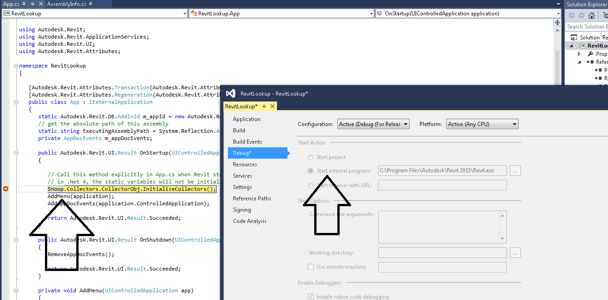

.NET Open Source and Visual Studio Community
Steve Mycynek of the Revit Development team pointed out an important update on .NET and Visual Studio:
As you may know, one frustration faced by Revit API developers is the lack of debugging support in the free Express versions of Visual Studio.
They do not support debugging DLLs against an EXE host or attaching to a process, which is exactly what we require to debug a Revit add-in loaded into Revit.exe (except by resorting to tricks, used, e.g., for the space adjacency for heat load calculation add-in).
This meant that if you wanted official support to debug a Revit add-in, you had to buy an expensive Visual Studio License – until now!
Last week, Microsoft presented a large set of free and open source announcements, including Visual Studio Community Edition, which is free and supports many more advanced features.
I just tried it out, and, as you can see, it also supports Revit add-in debugging:

Learn more at www.visualstudio.com and from the article by Scott Hanselman on .NET as open source, on Mac, on Linux and Visual Studio Community.
Many thanks to Steve for exploring this and letting us know!